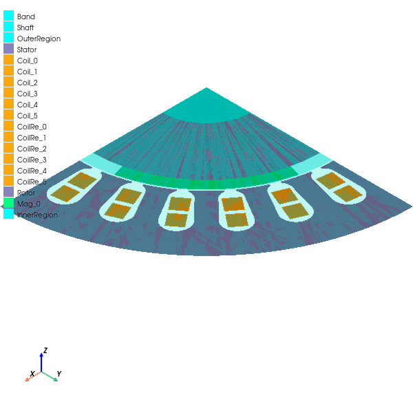

Download this example
Download this example as a Jupyter Notebook or as a Python script.
Motor creation and export#
This example uses PyAEDT to create a RMxprt project and export it to Maxwell 2D. It shows how to create an ASSM (Adjust-Speed Synchronous Machine) in RMxprt and how to access rotor and stator settings. It then exports the model to a Maxwell 2D design and the RMxprt settings to a JSON file to be reused.
Keywords: RMxprt, Maxwell 2D
Perform imports and define constants#
Perform required imports.
[1]:
import os
import tempfile
import time
[2]:
import ansys.aedt.core
Define constants.
[3]:
AEDT_VERSION = "2024.2"
NUM_CORES = 4
NG_MODE = False # Open AEDT UI when it is launched.
Create temporary directory#
Create a temporary directory where downloaded data or dumped data can be stored. If you’d like to retrieve the project data for subsequent use, the temporary folder name is given by temp_folder.name.
[4]:
temp_folder = tempfile.TemporaryDirectory(suffix=".ansys")
Launch AEDT and RMxprt#
Launch AEDT and RMxprt after first setting up the project name. This example uses ASSM (Adjust-Speed Synchronous Machine) as the solution type.
[5]:
project_name = os.path.join(temp_folder.name, "ASSM.aedt")
rmxprt = ansys.aedt.core.Rmxprt(
version=AEDT_VERSION,
new_desktop=True,
close_on_exit=True,
solution_type="ASSM",
project=project_name,
non_graphical=NG_MODE,
)
PyAEDT INFO: Python version 3.10.11 (tags/v3.10.11:7d4cc5a, Apr 5 2023, 00:38:17) [MSC v.1929 64 bit (AMD64)]
PyAEDT INFO: PyAEDT version 0.14.dev0.
PyAEDT INFO: Initializing new Desktop session.
PyAEDT INFO: Log on console is enabled.
PyAEDT INFO: Log on file C:\Users\ansys\AppData\Local\Temp\pyaedt_ansys_aedecc93-f1d8-4ef1-8339-4c5d2f7ea0af.log is enabled.
PyAEDT INFO: Log on AEDT is enabled.
PyAEDT INFO: Debug logger is disabled. PyAEDT methods will not be logged.
PyAEDT INFO: Launching PyAEDT with gRPC plugin.
PyAEDT INFO: New AEDT session is starting on gRPC port 55705
PyAEDT INFO: AEDT installation Path C:\Program Files\AnsysEM\v242\Win64
PyAEDT INFO: Ansoft.ElectronicsDesktop.2024.2 version started with process ID 2676.
PyAEDT INFO: Project ASSM has been created.
PyAEDT INFO: No design is present. Inserting a new design.
PyAEDT INFO: Added design 'RMxprtSolution_7EC' of type RMxprtSolution.
PyAEDT INFO: Aedt Objects correctly read
PyAEDT INFO: ModelerRMxprt class has been initialized! Elapsed time: 0m 0sec
Define global machine settings#
[6]:
rmxprt.general["Number of Poles"] = 4
rmxprt.general["Rotor Position"] = "Inner Rotor"
rmxprt.general["Frictional Loss"] = "12W"
rmxprt.general["Windage Loss"] = "0W"
rmxprt.general["Reference Speed"] = "1500rpm"
rmxprt.general["Control Type"] = "DC"
rmxprt.general["Circuit Type"] = "Y3"
Define circuit settings#
[7]:
rmxprt.circuit["Trigger Pulse Width"] = "120deg"
rmxprt.circuit["Transistor Drop"] = "2V"
rmxprt.circuit["Diode Drop"] = "2V"
Define stator#
Define stator and slot and winding settings.
[8]:
rmxprt.stator["Outer Diameter"] = "122mm"
rmxprt.stator["Inner Diameter"] = "75mm"
rmxprt.stator["Length"] = "65mm"
rmxprt.stator["Stacking Factor"] = 0.95
rmxprt.stator.properties.properties["Steel Type"] = [
"Material:=",
"steel_1008",
]
rmxprt.stator["Number of Slots"] = 24
rmxprt.stator["Slot Type"] = 2
[9]:
rmxprt.stator.properties.children["Slot"].properties["Auto Design"] = False
rmxprt.stator.properties.children["Slot"].properties["Hs0"] = "0.5mm"
rmxprt.stator.properties.children["Slot"].properties["Hs1"] = "1.2mm"
rmxprt.stator.properties.children["Slot"].properties["Hs2"] = "8.2mm"
rmxprt.stator.properties.children["Slot"].properties["Bs0"] = "2.5mm"
rmxprt.stator.properties.children["Slot"].properties["Bs1"] = "5.6mm"
rmxprt.stator.properties.children["Slot"].properties["Bs2"] = "7.6mm"
PyAEDT WARNING: Property Hs1 is read-only.
[10]:
rmxprt.stator.properties.children["Winding"].properties["Winding Layers"] = 2
rmxprt.stator.properties.children["Winding"].properties["Parallel Branches"] = 1
rmxprt.stator.properties.children["Winding"].properties["Conductors per Slot"] = 52
rmxprt.stator.properties.children["Winding"].properties["Coil Pitch"] = 5
rmxprt.stator.properties.children["Winding"].properties["Number of Strands"] = 1
Define rotor#
Define rotor and pole settings.
[11]:
rmxprt.rotor["Outer Diameter"] = "74mm"
rmxprt.rotor["Inner Diameter"] = "26mm"
rmxprt.rotor["Length"] = "65mm"
rmxprt.rotor["Stacking Factor"] = 0.95
rmxprt.rotor["Steel Type"] = [
"Material:=",
"steel_1008",
]
rmxprt.rotor["Pole Type"] = 1
[12]:
rmxprt.rotor.properties.children["Pole"].properties["Embrace"] = 0.7
rmxprt.rotor.properties.children["Pole"].properties["Offset"] = "0mm"
rmxprt.rotor.properties.children["Pole"].properties["Magnet Type"] = [
"Material:=",
"Alnico9",
]
rmxprt.rotor.properties.children["Pole"].properties["Magnet Thickness"] = "3.5mm"
Create setup#
Create a setup and define the main settings.
[13]:
setup = rmxprt.create_setup()
setup.props["RatedVoltage"] = "220V"
setup.props["RatedOutputPower"] = "550W"
setup.props["RatedSpeed"] = "1500rpm"
setup.props["OperatingTemperature"] = "75cel"
Analyze setup.#
[14]:
setup.analyze(cores=NUM_CORES)
PyAEDT INFO: Solving design setup MySetupAuto
PyAEDT INFO: Design setup MySetupAuto solved correctly in 0.0h 0.0m 9.0s
Export to Maxwell#
After the project is solved, you can export it to either Maxwell 2D or Maxwell 3D.
[15]:
m2d = rmxprt.create_maxwell_design(setup_name=setup.name, maxwell_2d=True)
m2d.plot(
show=False,
output_file=os.path.join(temp_folder.name, "Image.jpg"),
plot_air_objects=True,
)
PyAEDT INFO: Python version 3.10.11 (tags/v3.10.11:7d4cc5a, Apr 5 2023, 00:38:17) [MSC v.1929 64 bit (AMD64)]
PyAEDT INFO: PyAEDT version 0.14.dev0.
PyAEDT INFO: Returning found Desktop session with PID 2676!
PyAEDT INFO: No project is defined. Project ASSM exists and has been read.
PyAEDT INFO: Aedt Objects correctly read
PyAEDT INFO: Parsing C:/Users/ansys/AppData/Local/Temp/tmp40j03jny.ansys/ASSM.aedt.
PyAEDT INFO: File C:/Users/ansys/AppData/Local/Temp/tmp40j03jny.ansys/ASSM.aedt correctly loaded. Elapsed time: 0m 0sec
PyAEDT INFO: aedt file load time 0.0156252384185791
PyAEDT INFO: PostProcessor class has been initialized! Elapsed time: 0m 0sec
PyAEDT INFO: Post class has been initialized! Elapsed time: 0m 0sec
PyAEDT INFO: Modeler2D class has been initialized!
PyAEDT INFO: Modeler class has been initialized! Elapsed time: 0m 0sec
C:\actions-runner\_work\pyaedt-examples\pyaedt-examples\.venv\lib\site-packages\pyvista\jupyter\notebook.py:37: UserWarning: Failed to use notebook backend:
No module named 'trame'
Falling back to a static output.
warnings.warn(

[15]:
<ansys.aedt.core.visualization.plot.pyvista.ModelPlotter at 0x20a4dad6cb0>
Export RMxprt settings#
Export all RMxprt settings to a JSON file to reuse it for another project with the the import function.
[16]:
config = rmxprt.export_configuration(os.path.join(temp_folder.name, "assm.json"))
rmxprt2 = ansys.aedt.core.Rmxprt(
project="assm_test2",
solution_type=rmxprt.solution_type,
design="from_configuration",
)
rmxprt2.import_configuration(config)
PyAEDT INFO: C:\Users\ansys\AppData\Local\Temp\tmp40j03jny.ansys\assm.json correctly created.
PyAEDT INFO: Python version 3.10.11 (tags/v3.10.11:7d4cc5a, Apr 5 2023, 00:38:17) [MSC v.1929 64 bit (AMD64)]
PyAEDT INFO: PyAEDT version 0.14.dev0.
PyAEDT INFO: Returning found Desktop session with PID 2676!
PyAEDT INFO: Project assm_test2 has been created.
PyAEDT INFO: Added design 'from_configuration' of type RMxprtSolution.
PyAEDT INFO: Aedt Objects correctly read
PyAEDT INFO: ModelerRMxprt class has been initialized! Elapsed time: 0m 0sec
PyAEDT WARNING: Property Machine Type is read-only.
PyAEDT WARNING: Property Wire Size/WireSizeMixedDiameter set to None ignored.
PyAEDT WARNING: Property Wire Size/WireSizeMixedWidth set to None ignored.
PyAEDT WARNING: Property Wire Size/WireSizeMixedThickness set to None ignored.
PyAEDT WARNING: Property Wire Size/WireSizeMixedThicknessMixedFillet set to None ignored.
PyAEDT WARNING: Property Wire Size/WireSizeMixedThicknessMixedNumber set to None ignored.
[16]:
True
Save project#
Save the project containing the Maxwell design.
[17]:
m2d.save_project(file_name=project_name)
PyAEDT INFO: Project ASSM Saved correctly
[17]:
True
Release AEDT and clean up temporary directory#
Release AEDT and remove both the project and temporary directory.
[18]:
m2d.release_desktop()
time.sleep(3)
temp_folder.cleanup()
PyAEDT INFO: Desktop has been released and closed.
Download this example
Download this example as a Jupyter Notebook or as a Python script.